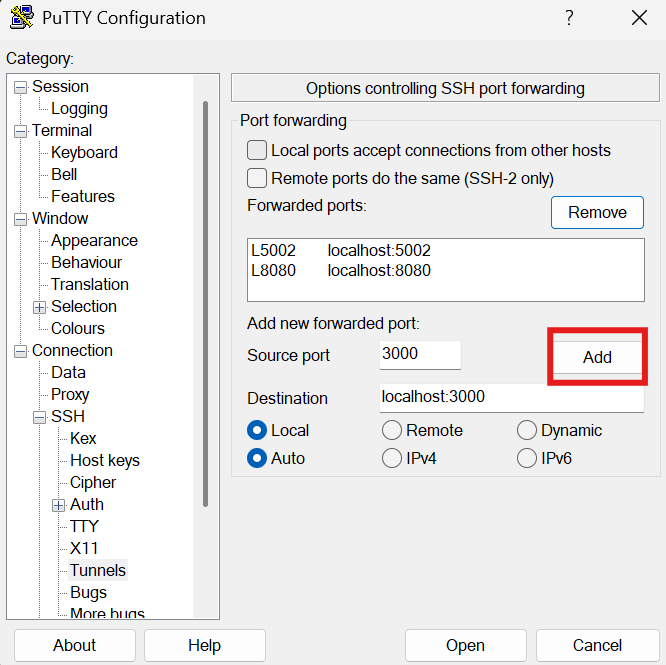
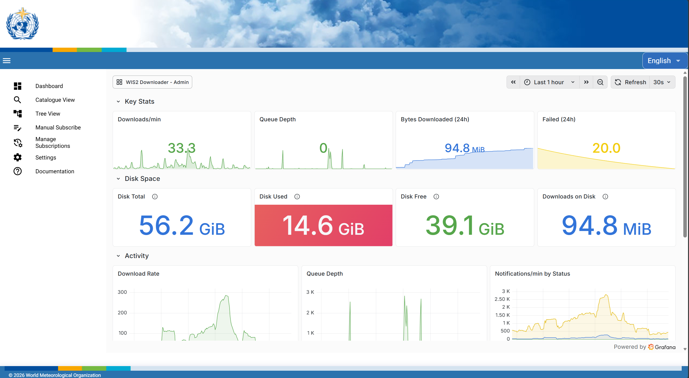
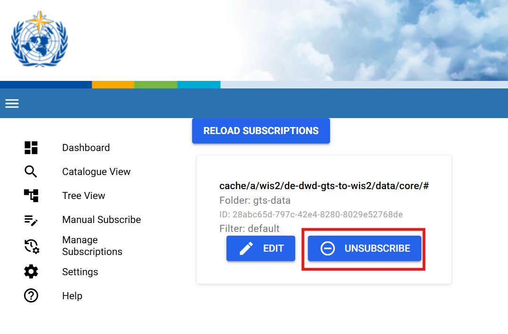

إعداد WIS2 Downloader على الجهاز الافتراضي الخاص بالطالب
نتائج التعلم!
بنهاية هذه الجلسة العملية، ستكون قادرًا على:
- إعداد نسخة خاصة بك من "WIS2 Downloader" وإدارة التكوينات المطلوبة
- التنقل عبر النسخة وإعداد الاشتراكات
- إزالة الاشتراكات الخاصة بك والعثور على البيانات التي تم تنزيلها
المقدمة
في هذه الجلسة، ستتعلم كيفية إعداد نسخة من WIS2 Downloader على الجهاز الافتراضي المخصص للطالب وكيفية التنقل عبر خدماته المختلفة.
حول WIS2 Downloader
يتوفر WIS2 Downloader كمشروع مستقل باستخدام Docker Compose. يُوصى بتشغيله على خادم منفصل أو جهاز افتراضي مختلف عن نسخة wis2box، لتجنب تداخل التنزيلات مع نشر الرسائل.
إذا كنت ترغب في تطوير خدمة خاصة بك للاشتراك في إشعارات WIS2 وتنزيل البيانات، يمكنك استخدام الشفرة المصدرية لـ WIS2 Downloader كمرجع.
للحصول على بديل أخف يوفر إمكانيات نشر وتنزيل رسائل WIS2، يرجى الاطلاع على مشروع pywis-pubsub.
التحضير والمتطلبات
إذا كنت على شبكة مقيدة
الخطوات التالية تحتاج إلى تطبيق فقط إذا تم تشغيل WIS2 Downloader على شبكة مختلفة وكانت المنافذ المذكورة غير متاحة. في أي تكوين، هذه هي المنافذ الوحيدة المطلوبة لاستخدام الإمكانيات الكاملة لمجموعة WIS2 Downloader.
قبل البدء، يرجى تسجيل الدخول إلى الجهاز الافتراضي الخاص بك مع التأكد من إنشاء نفق عبر SSH للمنافذ التالية:
5002 (API)8080 (UI)3000 (Grafana)
للقيام بذلك، يمكنك تغيير إعدادات الاتصال في برنامج Putty عن طريق إضافة تعيين المنافذ الثلاثة إلى منافذ على جهاز الكمبيوتر الخاص بك (localhost):

إنشاء نفق على Linux وmacOS
على Linux وmacOS، يمكنك إعداد الأنفاق نفسها مباشرة من الطرفية باستخدام العلم -L مع أمر SSH الخاص بك:
ssh -L 5002:localhost:5002 -L 8080:localhost:8080 -L 3000:localhost:3000 <username>@<WIS2DOWNLOADER_BASE_URL>
استبدل <username> و<WIS2DOWNLOADER_BASE_URL> ببيانات اعتماد الجهاز الافتراضي الخاص بك.
تثبيت WIS2 Downloader
قم بتنزيل أحدث إصدار من GitHub واستخرجه على الجهاز الافتراضي الخاص بك:
wget https://github.com/World-Meteorological-Organization/wis2downloader/archive/refs/tags/v1.0.0b1+rc4.tar.gz
tar -xzf v1.0.0b1+rc4.tar.gz
cd wis2downloader-*
قم بتشغيل سكربت الإعداد لإنشاء ملف التكوين الخاص بك:
bash setup.sh
استخدم مسار التنزيل التالي /home/<username>/wis2-downloads مع استبدال <username> باسم المستخدم الخاص بك. بعد ذلك، اضغط على Enter لاستخدام الإعدادات الافتراضية لكل من المستخدم والمجموعات.
إدارة أذونات المستخدم
يمكنك استخدام قيم مختلفة للمستخدم والمجموعة عن طريق تعديل WIS2DWONLOADER_UID وWIS2DWONLOADER_GID في ملف .env.
تذكر إعادة بناء الصور عند إجراء أي تغييرات على هذه القيم لتطبيقها.
سيتم إنشاء ملف .env من الإعدادات الافتراضية وتوليد قيم عشوائية لـ FLASK_SECRET_KEY وREDIS_PASSWORD. يمكنك مراجعة الملف باستخدام cat .env — الإعدادات الافتراضية مناسبة لنشر على جهاز واحد.
ابدأ تشغيل المجموعة الكاملة للخدمة:
docker compose up -d
التحقق من الحاويات التي تعمل
يمكنك التحقق من أن جميع الحاويات بدأت بنجاح باستخدام:
docker compose ps
الوصول إلى واجهة WIS2 Downloader
افتح متصفح الويب وانتقل إلى واجهة WIS2 Downloader الخاصة بك عن طريق الذهاب إلى http://<WIS2DOWNLOADER_BASE_URL>:8080.
ستجد نفسك في الصفحة الرئيسية التي يتم تعيينها افتراضيًا إلى عرض Dashboard الذي يعرض لوحة تحكم Grafana.

في قائمة الشريط الجانبي الأيسر، ستتمكن من التنقل عبر جميع الأقسام المختلفة للواجهة.
الأقسام الرئيسية المتاحة هي:
- Dashboard — الصفحة الرئيسية الافتراضية، وهي لوحة تحكم Grafana مدمجة تعرض نشاط التنزيل، حالة قائمة الانتظار، ومقاييس الخدمة التي تعمل. متاحة أيضًا على
http://<WIS2DOWNLOADER_BASE_URL>:3000. - Catalogue View — تصفح مجموعات بيانات WIS2 المتاحة عن طريق البحث أو التصفية في الكتالوج العالمي. اختر موضوعًا ودليل حفظ، ثم انقر على Subscribe لبدء التنزيل.
- Tree View — استعرض تسلسل مواضيع WIS2 كهيكل شجري قابل للطي. مفيد لاستكشاف المواضيع المتاحة قبل الاشتراك.
- Manual Subscribe — إنشاء اشتراك عن طريق إدخال تفاصيل الموضوع مباشرة، دون الاعتماد على الكتالوجات العالمية. مفيد للاشتراك في المواضيع بحرية باستخدام عدد كبير من الرموز العامة والوصول إلى المواضيع غير الموجودة في الكتالوجات العالمية مثل بوابات GTS والمواضيع المنشورة على الوسطاء الخاصين عند استخدامها في التكوينات غير الافتراضية.
- Manage Subscriptions — عرض وإدارة جميع الاشتراكات النشطة. من هنا يمكنك رؤية المواضيع التي تتم مراقبتها وإزالة أي منها لم تعد بحاجة إليها.
- Settings — حاليًا يسمح بإعادة تحميل كتالوج البيانات من الكتالوجات العالمية. سيتم توسيع هذا القسم في الإصدارات المستقبلية ليشمل التكوين العام وإدارة WIS2 Downloader.
- Documentation — يعرض الوثائق المدمجة لـ WIS2 Downloader.
إدارة الاشتراكات في واجهة المستخدم
كما في المثال السابق، ستصل إلى واجهة المستخدم للنسخة التي تعمل عن طريق الذهاب إلى http://<WIS2DOWNLOADER_BASE_URL>:8080.
هناك 3 طرق لإعداد اشتراك:
- في Catalogue View عن طريق تصفح المواضيع المتاحة بطريقة مشابهة لبوابات الكتالوجات العالمية.
- في Tree View عن طريق اختيار موضوع من كتالوج الكتالوجات العالمية واستكشاف المواضيع كما في MQTT Explorer.
- في Manual Subscribe حيث يمكنك كتابة المواضيع المطلوبة، الفلاتر والمعلمات الأخرى.
للتمرين التالي، سنشترك في جميع إشعارات synop القادمة من جميع عقد WIS2:
- أولاً، انتقل إلى Manual Subscribe.
- اكتب الموضوع كـ
cache/a/wis2/+/data/core/weather/surface-based-observations/synop - قم بتعيين مجلد الوجهة كـ
synop-data
يجب أن تكون النتيجة النهائية مشابهة لـ:

الآن اضغط على زر Subscribe وقم بتأكيد اشتراكك.
بعد ذلك، تحقق من مجلد التنزيل في الجهاز الافتراضي الخاص بك باستخدام الأمر:
ls -R ~/wis2-downloads
والآن يجب أن ترى سلسلة من الملفات التي تم تنزيلها بواسطة النسخة الخاصة بك.
كخطوة أخيرة، يمكننا حذف الاشتراك عن طريق الذهاب إلى عرض Manage Subscriptions والضغط على زر Unsubscribe.

حذف الملفات التي تم تنزيلها
يُوصى بتنظيف مجلد التنزيلات بعد إكمال التمرين لتحرير مساحة على الجهاز الافتراضي الخاص بالطالب. لذلك قم بتشغيل الأمر التالي لحذف ملفات التمرين السابقة.
rm -fr ~/wis2-downloads/synop-data
مراجعة تكوين WIS2 Downloader
يتم تكوين نسخة WIS2 Downloader باستخدام متغيرات البيئة المحددة في ملف .env.
يمكنك التحقق من تفاصيل متغيرات البيئة في دليل إدارة WIS2 Downloader القسم 2.1
لمراجعة التكوين الحالي لـ WIS2 Downloader، يمكنك استخدام الأمر التالي:
cat .env
راجع تكوين WIS2 Downloader
ما هي فترة الاحتفاظ الافتراضية للبيانات التي تم تنزيلها؟
أي منفذ يستمع إليه API الخاص بمدير الاشتراكات؟
اضغط للكشف عن الإجابة
فترة الاحتفاظ الافتراضية للبيانات التي تم تنزيلها هي 30 يومًا، كما هو محدد في DOWNLOAD_RETENTION_PERIOD.
يستمع API الخاص بمدير الاشتراكات على المنفذ 5002، كما هو محدد في WIS2DOWNLOADER_SUBSCRIPTION_MANAGER_URL.
تحديث تكوين WIS2 Downloader
لتحديث التكوين، قم بتحرير ملف .env وأعد تشغيل المجموعة لتطبيق التغييرات:
docker compose up -d
يمكنك الاحتفاظ بالتكوين الافتراضي للتمارين القادمة.
واجهة برمجة التطبيقات (API) الخاصة بـ WIS2 Downloader
يوفر WIS2 Downloader واجهة REST API عند <WIS2DOWNLOADER_BASE_URL>:5002. تحقق من جاهزية الخدمة:
curl localhost:5002/health
يجب أن ترى:
{"status": "healthy"}
لإنشاء اشتراك، أرسل طلب POST مع موضوع MQTT واختيارياً مجلد فرعي target حيث سيتم حفظ الملفات:
curl -s -X POST localhost:5002/subscriptions \
-H "Content-Type: application/json" \
-d '{"topic": "cache/a/wis2/+/data/core/weather/surface-based-observations/#", "target": "surface-obs"}'
كما في السابق، يمكن مراجعة الملفات التي تم تنزيلها من خلال التحقق من مجلد surface-obs في دليل التنزيل:
ls -R ~/wis2-downloads/surface-obs
يتضمن الرد UUID المخصص للاشتراك الجديد. استخدمه لحذف الاشتراك عند عدم الحاجة إليه:
curl -X DELETE localhost:5002/subscriptions/{id}
حذف الملفات التي تم تنزيلها
يُوصى بتنظيف مجلد التنزيلات بعد إكمال التمرين لتحرير مساحة على الجهاز الافتراضي الخاص بالطالب. لذلك قم بتشغيل الأمر التالي لحذف ملفات التمرين السابقة.
rm -fr ~/wis2-downloads/surface-obs
للحصول على القائمة الكاملة لنقاط النهاية المتاحة (قائمة، الحصول على، تحديث الاشتراكات والمزيد)، راجع الوثائق التفاعلية Swagger المتوفرة على localhost:5002/swagger.
الخاتمة
تهانينا!
في هذه الجلسة العملية، تعلمت كيفية:
- تثبيت WIS2 Downloader على نظامك المحلي وتغيير التكوينات الافتراضية
- التفاعل مع واجهة المستخدم لإنشاء وإزالة الاشتراكات
- إدارة الاشتراكات باستخدام واجهة برمجة التطبيقات
- عرض البيانات التي تم تنزيلها على نظامك المحلي